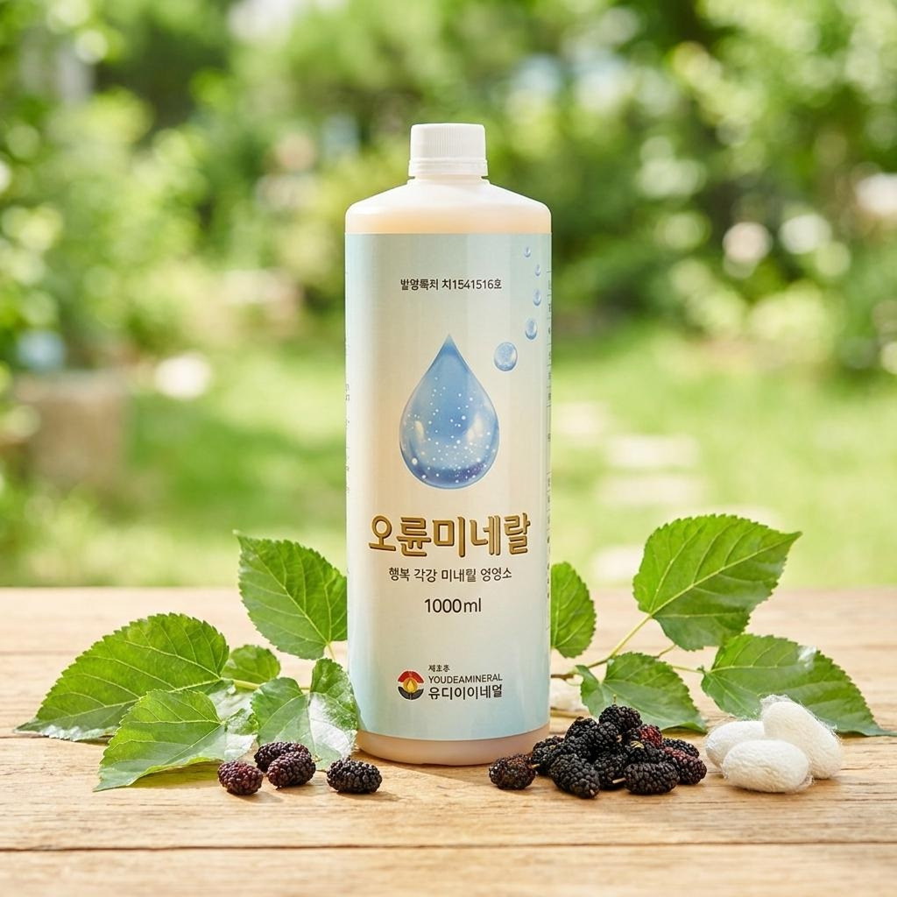

Minerals & Health
우리 몸에 꼭 필요한 미네랄, 어떤 질병과 연결되어 있을까요?
과학적 근거를 바탕으로 16가지 핵심 미네랄과 14가지 주요 질환의 관계를 알아봅니다.
↓ 스크롤하여 탐색하기
핵심 미네랄 한눈에 보기
각 미네랄을 클릭하면 상세 정보를 확인할 수 있습니다.
질환별 관련 미네랄
각 질환을 클릭하면 관련 미네랄이 어떤 역할을 하는지 설명을 볼 수 있습니다.
⚠ 의학적 참고사항
본 자료는 과학 논문 및 영양학 연구를 참고하여 정리한 교육용 콘텐츠입니다. 미네랄은 우리몸의 4%밖에 차지하지 않지만 모든 영양과 인체의 균형을 위해 미네랄이 필요합니다. 인체가 스스로 만들 수 없기 때문에 식품등을 통해 보충해줘야 합니다.
본 자료는 과학 논문 및 영양학 연구를 참고하여 정리한 교육용 콘텐츠입니다. 미네랄은 우리몸의 4%밖에 차지하지 않지만 모든 영양과 인체의 균형을 위해 미네랄이 필요합니다. 인체가 스스로 만들 수 없기 때문에 식품등을 통해 보충해줘야 합니다.